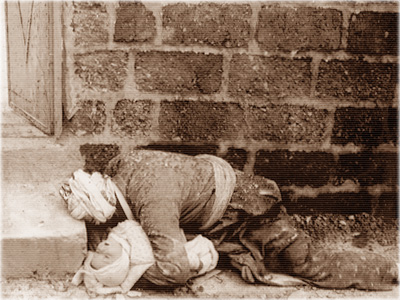

A Glance at the position of the town of Halabja
Prepared by Alex Atroushi
March 11, 1994
This page is dedicated to the people of Halabja who on March 16th, 1988 suffered the worst chemical attacks committed by the Iraqi regime. On that day, 5,000 innocent civilians, 75% women and children, immediately perished. This was not the only chemical attack ordered by Saddam, it was just the worst.

The pictures are said to have been taken in the aftermath of Saddam's attack using chemical weapons and cluster bombs on the Kurdish city of Halabja (population estimated at 70,000) on March 17, 1988. Halabja is located about 150 miles northeast of Baghdad and 8-10 miles from the Iranian border. The attack, said to have involved mustard gas, nerve agent and possibly cyanide, killed an estimated 5,000 of the town's inhabitants. The attack on Halabja took place amidst the infamous al-Anfal campaign, in which Saddam brutally repressed yet another of the Kurdish revolts during the Iran-Iraq war. Saddam is also said to have used chemical weapons in attacking up to 24 villages in Kurdish areas in April 1987.
Of all the atrocities committed against the Kurds during the Anfal, Halabja has come to symbolize the worst of the repression of the Iraqi Kurds. Halabja was a town of 70,000 people located about 8-10 miles from the Iranian border. It became the target of conventional and chemical bomb attacks over three days in March of 1988.
During those three days, the town and the surrounding district were unmercifully attacked with bombs, artillery fire, and chemicals. The chemical weapons were the most destructive of life. The chemicals used included mustard gas and the nerve agents sarin, tabun, and VX. At least 5,000 people died immediately as a result of the chemical attack and it is estimated that up to 12,000 people in all died during the course of those three days.
We were burnt as newly-grown plants,
In the current of poisonous winds,
And showed our dreadful wounds,
From one side of the world to the other.
But the unjust eyes of the world
Were never opened truly towards the oppressed.
The world only confined itself to a false regret, And once again,
We became a target as heaps and heaps of martyrs, We were the target of poisonous bombardments, We were the target of destructive bombs, And we remained the lonely oppressed ones of the world.
We rose from under tons of debris,
And stood up in the lands of poisonous bombings,
And we kept up standing and fighting,
Believe it, you people of tomorrow,
Believe such a history and learn a lesson,
Learn how to fight oppression in this way.*
* From the poem "Khaibar" by Mohammed Reza Abdol-Malakian.
Halabja, standing against oppression
Joy and happiness permeated the air in Halabja.
Smiles never faded from the lips of the ever oppressed people of this town.
The Iraqi fighter planes carried out the chemical bombing of Halabja,
and some hours later the news came that Khormal, too, had suffered
chemical bombing.
The sound of laughter died down.
Children sought the shelter of their mothers' arms.
March 16, was the beginning of the great crime of history.
On Thursday March 17, 1988, and on Friday March 18, there took place one of
the most shameful and fearful inhumane crimes of history in Halabja. The town of
Halabja was bombed with chemical and cluster bombs more than twenty times
by Iraqi fighter planes.
In every street and alley women and children rolled over one another.
The sound of crying and groans rose from every house in the town.
Many families who were sleeping happily in their beds in their liberated town,
were subjected before sunrise to chemical bombing,
and poisonous gases did not even allow them to rise from their beds.
Such was the situation on the bloody Friday of Halabja.
A Glance at the position of the town of Halabja
City of Halabja, with a population of about 70,000 is in the province of Sulaimanya, 260 kilometers north-east
of the city of Baghdad. It is surrounded by the heights of Suran, Balambu, Shireh-roudi and Shaghan in the north,
south and east. The lake of the dam of Darbandikhan is to the west of this town. Halabja which is within 11 kilometers of the nearest Iranian borderline occupies a green and fertile area covered with forest vegetation. Most of the people of Halabja are farmers or cattle breeders. Halabja and its surrounding villages such as Khormal and Dojeyleh have for long witnessed the struggles of the Kurds against the Iraqi regime.
What happened to Halabja on the Bloody Friday?
The brutal massacre of the oppressed and innocent people of Halabja began before the sunrise of Friday, 18th of
March 1988. The Iraqi regime committed its most tragic and horrible crime from the beginning of the imposed war until now against the civilian people on Friday, 18th of March. On that day, Halabja was bombarded more than twenty times by Iraqi regime's warplanes with chemical and cluster bombs. That Friday afternoon, the magnitude of Iraqi crimes became evident. In the streets and alleys of Halabja, corpses piled up over one another. Tens of children, while playing in front of the their houses in the morning, were martyred instantly by cyanide gases. The innocent children did not even have time to run back home. Some children fell down at the threshold of the door of their houses and never rose again.
A mother who embraced her one-year-old baby, fell down two steps from her house and was martyred. In a 150 meter area in the main street of Halabja, at least fifty women and children were martyred as a result of the deployment of the chemical weapons. A father was sitting over the bodies of his wife and ten of his children in one of the alleys of Halabja and was wailing. The sound of his wailing touched any cruel human being. The crimes were huge, very huge.
In a Simorgh Van, the corpses of 20 women and children who had been prepared to leave the town and the chemical bombardment of the town had deprived them of this opportunity, made any observer stop and ponder about the depth of the catastrophe. Fatal wounds on the corpses of these innocent people were evident.
The doors of most houses were left open and inside of each house, there were some martyred and wounded people.
The enemy had heightened the cruelty and heart-handedness to its peak and took no pity on its own people.
Saddam's crime in the chemical bombardment of Halabja has indeed been unprecedented in the history of
the imposed war. Saddam's crime in Halabja can never be compared to the tragedy of the chemical bombardment of Sardasht. In Halabja more than five thousand people were martyred and over seven thousand more people were wounded.
Women and children formed 75 percent of the martyrs and wounded of the bloody Friday of Halabja.
Along with Halabja, Khormal, Dojaileh and their surrounding villages were also chemically bombarded frequently
but the center of the catastrophe was Halabja.
The Repetition of a Crime which Has Been Condemned Several Times
The Iraqi regime signed the 1925 protocol of Geneva of the prohibition of the deployment of the chemical and biological weapons in wars in 1931. The regulations of the 1972 Convention of Geneva requesting all countries to cease production, completion and conservation of all kinds of chemical and biological weapons and to demolish them and the UN 37/98 resolution emphasizing the necessity of observing the articles and contents of the 1925 protocol and the 1972 Convention of Geneva have also been accepted by the UN member countries including Iraq.
In late April 1987, twenty four villages of Iraq's Kurdistan were targeted by the chemical bombardment These villages were chemically bombarded twice in less than 48 hours. Saber Ahmad Khoshnam, one of the inhabitants of the bombarded villages in Loqmanodulleh Hospital in Tehran on 28th of April 1987, told reporters that the Iraqi warplanes dropped 18 chemical bombs at Sheikh Dassan, Kani Bard, Pasian and Tuteman villages. He said that more than one hundred people of these villages were wounded and that he had witnessed that an entire family in Parsian village lost their sight. In the course of the chemical bombardment of the late April 1987 of the Iraqi villages, more than 130 innocent villagers were martyred and about five hundred of them were wounded.
The Iraqi regime has deployed chemical weapons against its own people while the UN general secretary's representatives during their visits to Iran in two occasions, prepared detailed reports from the deployment of the chemical weapons against the civilian people and submitted them to the United Nations in reports number S/1 6433 and S/18852 and after the submission of these reports by the general secretary to the Security Council, eventually this council, too, joined those individuals and organizations who condemned Iraq's deployment of chemical weapons. But despite all these condemnations, Baghdad's rulers have continued their crimes.
The Gases Deployed against the People of Halabja
The Iraqi regime, in the chemical bombardment of Halabja and the surrounding towns and villages, has deployed
three kinds of chemical gases. According to the findings of Iranian physicians, the mustard, nerve and cyanide gases have been used against civilians in Halabja and its surroundings. A group of the martyrs of the chemical bombardment of Halabja, after inhaling the cyanide gas, were suffocated immediately. Post-mortem examination of the bodies of the chemical bombardment of Halabja, has proved that the suffocation of the most of the martyrs has been due to the inhalation of cyanide gas.
Mass media and Iraq's crimes in Halabja
The Iraqi regime's crimes in chemically bombing the Halabja town were too grave for any human being to overbook.
Correspondents of the western and American mass media who have visited Halabja, found out some facts about
the horrible crimes committed by the Iraqi regime.
Also, the radio and televisions network in the United States, France, and Britain, by broadcasting a short film of
the chemical massacre of the Halabja residents, made their audiences familiar with the most horrible crimes in
the history after the atomic bombardment of Hiroshima and Nakazaki Some of the materials reelected by
the world press concerning the chemical bombardment of Halabja are as follows:
Article by the correspondent of the London Daily., the independent, published on 23rd of March, 1988:
" ... The reported slaughter of 5,000 Kurds in Iraqi poison gas attacks underlines a dangerous new dimension
in the volatile middle east: the growth of the chemical warfare capability of several important regional powers, and the fear that, despite efforts to curb these weapons, they could be used more widely.
".. (in producing chemical weapons) Iraq has apparently been helped by British, west German, Indian, Austrian, Belgian, and Italian companies, despite bans on the sale of chemical that could have military use...
"... There is evidence that the Iraqis did drop poison gas bombs on the towns because the traditionally rebellious Kurds, who have been fighting for autonomy from Baghdad for years, welcomed the Iranian (troops)."
French Television m 23rd, and 24th of March, 1988
Different French Television networks, on Thursday and Wednesday on 23rd and 24th of March 1988, the first pictures of corpses of thousands of those martyred and wounded of the chemical bombing in Halabja were broadcast.
The commentators of the French Television, described these crimes as intolerable, disgusting and horrible. Some commentators considered the crimes of Saddam as even more horrible than some of Hitter's crimes.
The first channel of the French Television noted that it is not the first time that the Baghdad regime had deployed chemical weapons, however this is the first time that Iraq, is so vastly deploying them against the civilians.
Andrew Gowers, middle east editor, and Richard Johns of the London Daily, Financial Times, writing on 23rd of March, 1988:
"... What has been happening in the last year, especially the last week, in a remote corner of north-east Iraq reveals unplumbed depths of savagery...
Alistair Hay, pathology professor at Leeds university, England, speaking on BBC Television News, and BBC Radio
World Service oh 22nd and 23rd of March, 1988:
" The Kurds have claimed for a number of months, perhaps over a year, that Iraq has been using chemical agents against them. But this latest occasion seems to be the first really documented case that we have where chemical agents have been used.
"Iraq has used chemical agents against Iran on a very large scale for three years now. And although the west and other countries have been condemnatory about that use, the country (Iraq) still felt secure enough to use chemical agents.
They have used them because these agents are very effective against and opposition that has no protection and until such time as there is perhaps an end to war, or sufficient sanctions against Iraq to persuade it not to use chemical agents, I'm afraid they will continue to use them or so it seems."
"The United Nations have had three investigations into the use of chemical warfare agents in the Iraq-Iran war and they have said unequivocally on all three occasions that Iraq has used chemical warfare agents. They have said that mustard gas was certainly used on all three occasions, that is in 1984, 1986 and 1987. And they have also said that they have evidenced that a nerve agent, tabun, was also used. The investigation was carried by a well qualified team, so l have no doubt in my mind that they have been used."
Article from Halabja by David Hirt, Middle East correspondent of London Daily, the Guardian, published on March 23, 1988:
" No wounds, no blood, no traces of explosions can be found on the bodies - scores of men, women and children,
livestock and pet animals - that litter the flat-topped dwellings and crude earthen streets in this remote and neglected
Kurdish town...
" The skin of the bodies is strangely discolored, with their eyes open and staring where they have not disappeared into their sockets, a grayish slime oozing from their mouths and their fingers still grotesquely twisted.
" Death seemingly caught them almost unawares in the midst of their household chores. They had just the strength, some of them, to make it to the doorways of their homes, only to collapse there a few feet beyond. Here a mother seems to clasp her children in a last embrace, there an old man shields an infant from he cannot have known what...
Crimes which committed by Saddam regime 1986
"It is hard to conceive of any explanation for the chemical bombardment of Halabja other than the one which
Iranians and Kurds offer - revenge...
"As artillery continues to rumble round the hills, Halabja stands silent and deserted except for what they can
find and a dazed old man, absent during the bombing, who has come back in search of his family..."
Bloody Friday
Chemical massacre of the Kurds by the Iraqi regime